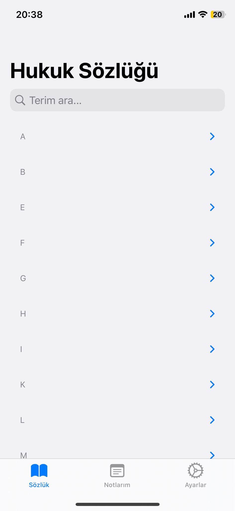
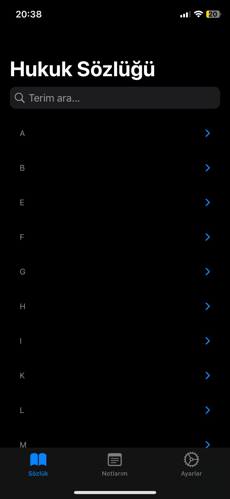
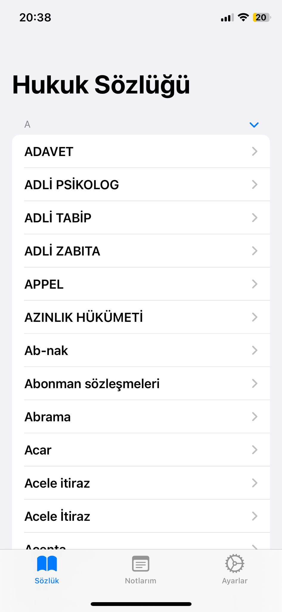
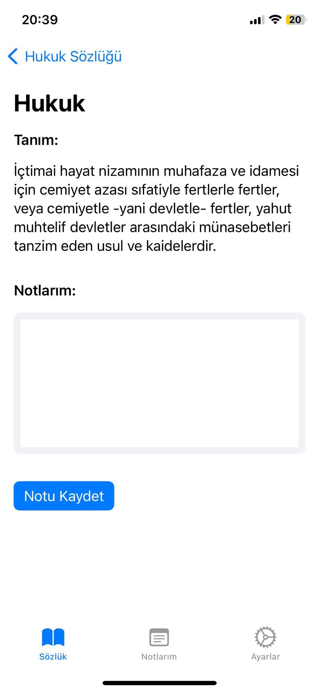
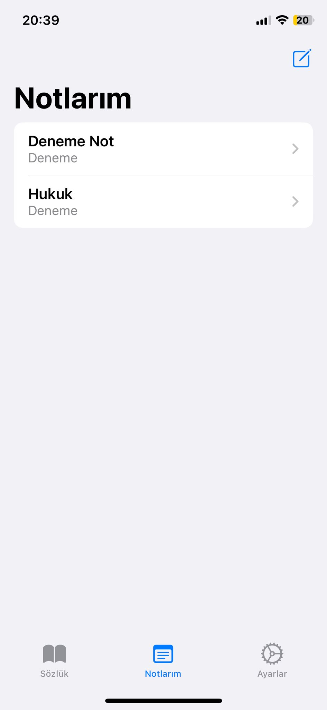
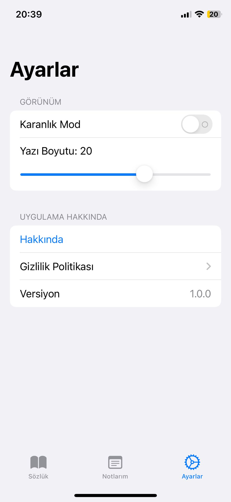
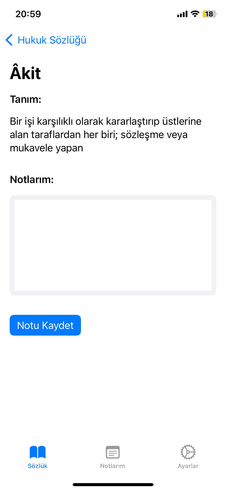
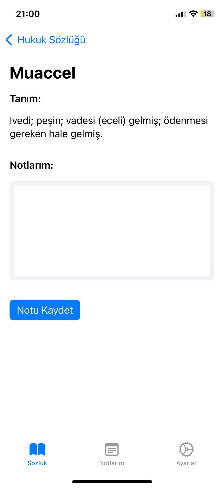
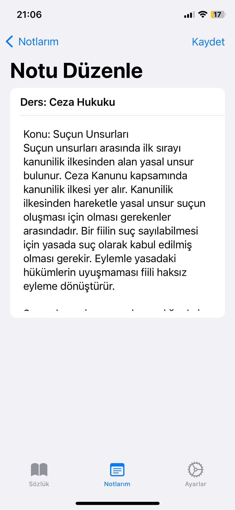

Hukuk Sözlüğü
Hukuk Sözlüğü, hukuk alanında bilgi edinmek isteyenler için kapsamlı bir rehber sunar. Uygulama, 2.500'den fazla terimle zengin bir içerik sunarken, her bir terim için birden fazla not almanıza olanak tanır. Aldığınız notlar, düzenli bir şekilde "Notlarım" sekmesinde saklanır ve kolayca erişilebilir. Kullanıcı dostu tasarımıyla, **Terimler**, **Notlarım** ve **Ayarlar** olmak üzere üç ana sekme sunar. Ayarlar kısmında, karanlık mod ve açık mod seçeneğiyle görsel tercihlerinize uygun bir deneyim yaşarken, yazı boyutunu da kolayca ayarlayabilirsiniz. Gelişmiş terim arama özelliği sayesinde ihtiyaç duyduğunuz bilgiye anında ulaşabilir, hukuk çalışmalarınızı daha verimli hale getirebilirsiniz.
Özellikler
- Adalet Bakanlığı onaylı 2.500'den fazla terim
- Karanlık mod ve açık mod seçenekleri
- Terim arama özelliği
- Kişisel notlarınızı kaydetme ve düzenleme imkânı
- Kullanıcı dostu arayüz
- Yazı Boyutu Seçeneği
- Geri bildirim ve görüşlerinize önem veren teknik ekip
Fotoğraflar
Beyaz Mod
Siyah Mod
Kelimler
Hukuk Kelimesi
Notlar
Ayarlar
İçerik Örnekleri
  